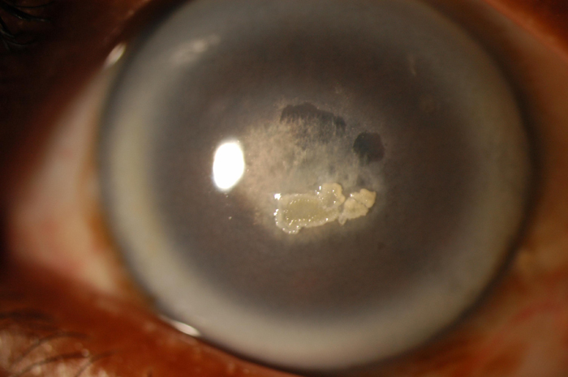
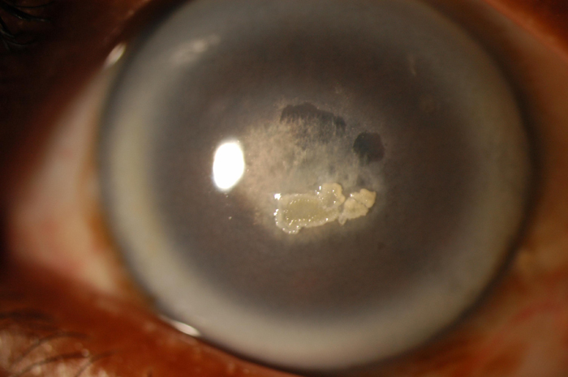

+ Loạn dưỡng giác mạc Schnyder
+ Bệnh di truyền có đặc trưng là những lắng đọng màu vàng của tinh thể cholesterol ở nhu mô giác mạc phía trước

Loạn dưỡng Schnyder

Loạn dưỡng Schnyder khi so sánh với giác mạc bình thường về mặt mô học
Schnyder's crystalline dystrophy
* Định nghĩa:
+ Loạn dưỡng giác mạc Schnyder
+ Bệnh di truyền có đặc trưng là những lắng đọng màu vàng của tinh thể cholesterol ở nhu mô giác mạc phía trước

Loạn dưỡng Schnyder
Loạn dưỡng Schnyder khi so sánh với giác mạc bình thường về mặt mô học